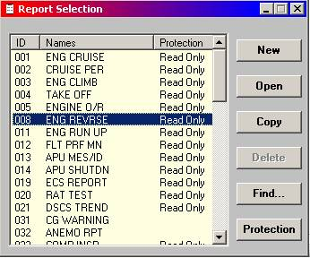
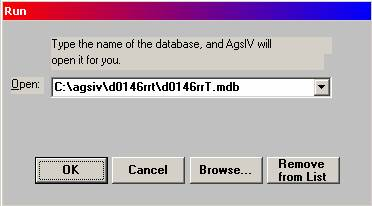

The Aircraft Condition Monitoring System (ACMS) is a suite of ground-based and airborne hardware and software products for monitoring and reporting of aircraft conditions. Typical uses of ACMS are in:
· aircraft maintenance planning and scheduling,
· trend and exceedance monitoring,
· position and weather reporting, and
· flight operations and training programs.
The ACMS systems are also called ADAS (Aircraft Data Acquisition System) or AIMS (Aircraft Information Management System).
The ground-based component of the Teledyne ACMS helps with the development and testing of the application programs that are then loaded into the airborne units. There are also other ground-based components that even though are not considered part of ACMS, help with the playback, formatting, analysis, and reporting of the trends of data captured during the flight.
The airborne component of ACMS, as configured by the ground-based tool, performs the aircraft monitoring task and reports the findings to a variety of external and internal devices. ACMS can communicate with the flight deck Multi-function Control and Display Unit (MCDU), the Interactive Display Unit (IDU), Multi-function Interactive Display Unit (MIDU), Multiple Interface Control and Display Unit (MICDU), Multi-purpose Disk Drive Unit (MDDU), Airborne Data Loader (ADL), Portable Data Loader (PDL) and the flight deck printer.
In what follows, we first present an overall description of the ground-based and airborne sections of the ACMS. This is then followed by a detailed discussion of the application development component of the ground-based part of the ACMS in subsequent chapters.
The ground-based component of the Teledyne ACMS is a Windows based software suite, called the Application Generation Station (AGS IV). This software runs on a Pentium class Personal Computer (PC) and enables the application developer to customize the characteristics of the airborne unit (see Figure 1.1). Examples of such customization are the selection of the type of parameters to be acquired, the amount of data to be recorded, the format of messages sent and received from the ground, and the content of the screens appearing on the flight deck displays.
Step 1: An application developer interacts with the PC based system called AGS IV. During this interaction, the developer completes a set of Windows based forms that configure the application to that of the airline’s requirements.
Step 2: Once the development step is complete, the developer instructs the system to build a loadable copy of the system. The built system is placed on a set of diskettes, an optical disk or a PCMCIA card.
Step 3: The diskettes, disk or card holding the built system, is carried to each intended aircraft and loaded into one of several Teledyne Controls’ airborne target units (iDMU, FDIMU, DMU, DFDMU etc.).
Figure 1.1: The sequence of steps in the application development process.
AGS IV is an intuitive system where the airborne functionality is defined by filling forms on a PC. The triggering conditions for specific actions or calculations can also be specified using a simple language that, while easy to master, is expandable to allow the more advanced users to specify complex calculations and event triggers. The detailed discussion of AGS IV is the main subject of this manual and will be discussed extensively in later chapters.
Most airborne system components have two subsystems. First, the flight recording subsystem, mandated by the civil aviation’s regulatory agencies, is used to investigate accidents. Second, the optional subsystem, although not required, is installed by most airlines in support of their maintenance and flight operations. The ACMS, as discussed earlier in this chapter, is an example of the optional component of the monitoring systems, and ACARS is an example of an optional communication system.
The mandatory component receives and if necessary, digitizes data from:
· different sources of analog voltages,
· discrete (on/off) signals or switches, and
· the Aeronautical Radio INC standard 429 (ARINC 429) busses,
and sends the results to:
· the flight recorder (DFDR or the so called ‘crash recorder’) in a biphase or bipolar signal form, and
· to the ACMS through an inter-CPU buffer or, in the newer Teledyne systems, through a dedicated bus conforming to ARINC 429.
The following Teledyne product families are at the center of the airborne component of the ACMS (the optional subsystem):
· DMU (Data Management Unit) for Boeing B737, B747, B757, B767, and MD11 aircraft.
· FDIMU (Flight Data Integrated Management Unit) for Airbus A318, A319, A320, A321, A330, and A340
· iDMU (Integrated Data Management Unit) for Boeing B737, B747, B757, and B767
· DFDAU (Digital Flight Data Acquisition Unit) for Boeing B737, B747, B757, B767, and MD11 aircraft.
· 2233000-9XX for Boeing B737, B747, B757, B767, and MD11 aircraft.
· DFDMU (Digital Flight Data Management Unit) for Airbus A300, A310, Boeing B737, B747, B757, B767, BBJ, MD11, MD90, British Aerospace BAe146, Fokker F28, Lockheed L1011 and NIMROD aircraft.
Inputs to these units come from:
1- aircraft’s mechanical, electrical and/or engine sensors through:
· ARINC 429 busses directly connected to the ACMS, and
· Discretes (on-off signals) directly connected to the ACMS. These switches are sometimes called the “Analog Discretes” to distinguish them from some ARINC 429 words that also carry discrete parameters, called “ARINC 429 discretes”,
2- as mentioned earlier, from the mandatory part of the monitoring system, through:
· an inter-CPU buffer, or
· an ARINC 429 bus (even though the mandatory can be in the same box, the ARINC 429 input is treated as if it was coming from the outside), or
· by eavesdropping on the data going from the mandatory system to the flight recorder. This capability is used in conjunction with earlier mandatory systems that are not designed to provide an inter-CPU buffer or ARINC 429 output.
The users of AGS IV are mostly airline personnel from Engineering, Flight Operations, Maintenance, or similar organizations who are given the task of updating the airborne systems with the airline requirements. These users collect the requirements from the airline departments interested in the airborne data or the functionality of the unit, and enter the requirements via AGS IV. Once this is done, the resulting application is built and uploaded into the airborne unit.
In addition to those responsible for maintaining the application, others also rely on AGS IV to provide:
· data for interpreting the reports or the recordings obtained from the flights,
· data for simulating the aircraft parameters to test applications, and
· simulation of the flight deck displays.
The Teledyne Controls’ Systems Engineers use AGS IV to provide application specification and generation services, to the airline that may request these services.
The chapters in this Manual are organized to provide the reader with a basic introduction to airborne Data Acquisition, as well as the use of AGS IV.
The chapter on installing AGS IV and sample applications can be skipped if the reader has access to an installed and operational AGS IV.
Each of the next chapters relates to one basic area of AGS IV activity, such as Parameters, Reports, etc. The introductions to these chapters describe the associated airborne function. A chapter may be skipped if that particular function does not apply or is not to be modified. The last few chapters of the manual define the more advanced functions of AGS IV.
In each chapter, sections enclosed in boxes, define the more advanced uses of the system and are not required for the basic operation of AGS IV. These sections can be skipped in the first reading.
Throughout this manual, the convention ‘A ® B’ is used to indicate the selection of ‘B’ from the choices made available by ‘A’. For example, in the context of Windows:
Start ® Programs ® Internet Access ® Windows FTP
indicates the selection of :
· ‘Programs’ option from the Windows ‘Start’ list, followed by
· ‘Internet Access’ option from ‘Programs’ list, followed by
· ‘Windows FTP’ option from ‘Internet Access’ list.
AGS IV follows, for the most part, Microsoft’s Windows and Office user-interface conventions where, as needed, application windows can be dragged, re-sized, minimized or maximized, and closed. It is also possible to have more than one window open at a time. This enables the developer, for example, to define a report at the same time as having a parameter definition window in view for reference purposes.
Another Windows feature also enabled in AGS IV, is the capability of allowing the user to manipulate the format of lists displayed by AGS IV. The user may resize the columns in a list by dragging the sides of the title bars of the columns. The user may also control the sorting of the list by pressing the title bar of the column on which the data is to be sorted. Pressing the title bar a second time reverses the order of the sort. Note the title bars named “ID”, “Names”, and “Protection” in the sample list of Figure 1.2.

Figure 1.2: Columns in a typical Report Selection dialogue box.
This manual is most effective when the reader has access to a copy of AGS IV and a sample application. If AGS IV and the application are already installed, the reader should simply follow the following instructions to get started. Otherwise, one should follow the instructions in the chapter on Installation & Backup to first install the system and a sample application before proceeding with the study of this manual.
To run an already installed application, locate and double click the AGS IV icon. When the main screen appears click on the button to start the application. Once the application starts, a dialogue box, similar to the one shown in Figure 1.3, appears.

Figure 1.3: Application Selection Window.
In response, either enter the name of the sample application file (specify the complete path as well as the .mdb extension), or use the function to locate the application on the disk drive. Once the application name is entered, complete the action by clicking on the button. Based on the type of the selection, an ACMS application generation window will be displayed. Furthermore, option may be used to remove the displayed entry from the list.
Where applicable, instead of typing in the application name, AGS IV allows you to select one of the five most-recently-accessed applications, by expanding the list of application names.
Once an application is selected, the program starts with a menu bar, providing function selections, and a tool bar for direct access to the more frequently used items of the menus. From the menus bar:
· The File menu is used to Close the current sub-window, Save the changes, Print the current sub-window, or Exit the application.
· The Edit menu allows for Cut, Paste, Copy, Find, and Find Next, items from one location to another.
· The Configure, Define, Build, Tools, and Disk Utilities menus are the main application definition menus and are described in detail in later chapters.
· The Window and Help menus provide standard windowing and help capabilities using Microsoft conventions.
The tool bar allows direct access to some of the frequently used items of the “Define” menu.
In the case of ACMS the following items are available:
Parameter Screen Report Triggers Recording
SAR Recording (not available for iDMU)
The background wallpaper for an application is user selectable and is recommended to be a picture of the particular aircraft for which the application is being developed. The purpose of this is to reduce the possibility of data entry into an incorrect application, especially in cases where more than one application is stored on a single computer. Therefore it is recommended to select unique wallpapers for every application. If different versions of the same application are to be maintained concurrently, then each version should also have a unique wallpaper. Selecting wallpaper is described in the chapter on Configuration.
With the widespread acceptance of the Teledyne Controls User Programmable Airborne Units as the “standard” by most airlines, support for new systems or features are added to AGS IV on an almost monthly basis. To document these additional capabilities, Teledyne publishes bulletins called “Application Notes”. These notes apply to the DOS version of AGS as well as AGS IV and are distributed by the Document Control Department of Teledyne Controls. The relevant Application Notes at the time of release of an AGS IV version are also accessible through the Help menu.
The AMTAL language used in defining triggers and calculations, is described in the AMTAL Users manual, published by Teledyne Controls.
Another source of information on the functionality of the airborne unit is the Functional Specification of the unit or the Pilots’ Guide, if one exists.
Special thanks go to Mr. Armen Nahapetian whose talent in explaining difficult subjects in simple terms has greatly helped with improving the clarity of concepts. Further thanks are due to: Dan Brower, Quan Duong, David Freedman, Marc Mavadat, Julia Rafailova, Lavinia Sadrapeli, and Simone Zand who in different ways have helped clarify the concepts and/or improve the presentation of the material.
Comments, corrections or suggestions on the content of this manual are appreciated. If possible, please email them to armen_nahapetian@teledyne.com, with email subject specified as “AGSIV Comments”.